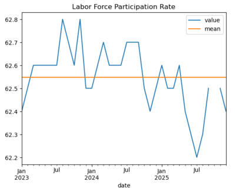
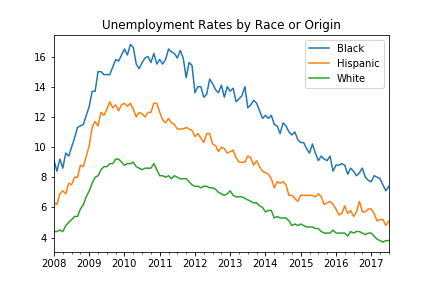

Bureau of Labor Statistics (BLS) API with Python
The BLS Public Data API allows machine access to an enormous and incredibly useful set of U.S. economic data. With python, it is easy to integrate BLS data into projects, research, and graphics without the need to manually find, download, and combine files.
This notebook offers two examples of using python to request economic data from the BLS API. The first example requests the labor force participation rate from the BLS v1 API. The second example requests unemployment rates by race/origin, and shows a method for requesting multiple series over a longer period of time using the v2 API.
Background
BLS
The U.S. Bureau of Labor Statistics is part of the Department of Labor. You can read more about BLS here.
The Bureau of Labor Statistics of the U.S. Department of Labor is the principal Federal agency responsible for measuring labor market activity, working conditions, and price changes in the economy.
API
BLS-data-related tasks that are exploratory, repetitive, or need to be well documented, can make use of Application Programming Interface (API) to save time. The API allows users to request data with specific parameters, such as the BLS series ID, dates, or preferred format. Data returned can be fed into pandas or other programs for further calculations and analysis.
Python
The examples use Python 3.x with the requests and pandas packages.
Example 1: Single series from API v1
Import Libraries and Request DataThe version 1 API does not require registration. The series ID is appended directly to the URL path. You can find series IDs using the BLS data site search tools. Here we request the civilian labor force participation rate (LNS11300000).
In[1]:
import requests
import pandas as pd
# BLS API v1: series ID goes in the URL path
url = 'https://api.bls.gov/publicAPI/v1/timeseries/data/LNS11300000'
r = requests.get(url).json()The API returns a nested dictionary. The actual data lives at r['Results']['series'][0]['data']—a list of dictionaries, one per month, with the most recent month first.
In[2]:
data = r['Results']['series'][0]['data']
print(data[0]){'year': '2025', 'period': 'M12', 'periodName': 'December', 'latest': 'true', 'value': '62.4', 'footnotes': [{}]}
Read into Pandas
We create a DataFrame directly from the list of dictionaries, then construct a proper datetime index from the year and period fields.
In[3]:
df = pd.DataFrame(data)The period field uses the format M01 through M12. We strip the M prefix to build a date string. BLS uses - for missing values, so we replace those with None before converting to float.
In[4]:
# Combine year and period to create datetime column
df['date'] = pd.to_datetime(df['year'] + '-' + df.period.str[1:] + '-01')
# Extract footnote text
df['note'] = [i[0].get('text', '') for i in df['footnotes']]
# Reorganize data; BLS uses '-' for missing values
df = df.set_index('date')[['value', 'note']].sort_index().replace('-', None)
df['value'] = df.value.astype(float)
df.tail(3)Out[4]:
| value | note | |
|---|---|---|
| date | ||
| 2025-10-01 | NaN | Data unavailable due to the 2025 lapse in appropriations. |
| 2025-11-01 | 62.5 | |
| 2025-12-01 | 62.4 |
Plot the monthly values with a horizontal line at the period mean to show the overall trend.
In[5]:
ax = df['value'].plot(title='Labor Force Participation Rate')
ax.axhline(df['value'].mean(), color='orange', label='mean')
ax.legend();Out[5]:

The v1 API is simple but limited in the number of requests and years returned. For more complex requests, the v2 API shown in example 2 is preferable.
Example 2: Requesting multiple series and specific dates
The second example uses the BLS API v2 (which requires free registration) to request more than one series at the same time. The version 2 API has a higher daily query limit, allows more years and series to be returned in each query, and allows some additional options such as requesting data in percent change rather than level. See difference between v1 and v2. The API key is stored in a local config.py file; see the Getting Started guide for details.
The v2 API uses a POST request instead of GET—we send a JSON body specifying which series, years, and API key we want. The requests library's json= parameter handles the serialization and headers automatically. See: What is the difference between POST and GET?
In[6]:
import config # .py file with bls_key = 'API key here'
url = 'https://api.bls.gov/publicAPI/v2/timeseries/data/'
# Series stored as a dictionary
series_dict = {
'LNS14000003': 'White',
'LNS14000006': 'Black',
'LNS14000009': 'Hispanic'
}
# Post request with json= (handles serialization and headers)
results = requests.post(url, json={
"seriesid": list(series_dict.keys()),
"startyear": "2008",
"endyear": "2017",
"registrationkey": config.bls_key
}).json()['Results']['series']The API returns each series in the same format, so we loop through them to build a DataFrame. The data arrives in reverse chronological order, so we reverse it with iloc[::-1].
In[7]:
# Date index from first series
date_list = [f"{i['year']}-{i['period'][1:]}-01" for i in results[0]['data']]
# Build a DataFrame column per series
df = pd.DataFrame()
for s in results:
df[series_dict[s['seriesID']]] = pd.Series(
index=pd.to_datetime(date_list),
data=[i['value'] for i in s['data']]
).astype(float).iloc[::-1]
df.tail()Out[7]:
| Black | Hispanic | White | |
|---|---|---|---|
| 2017-03-01 | 8.0 | 5.1 | 3.9 |
| 2017-04-01 | 7.9 | 5.2 | 3.8 |
| 2017-05-01 | 7.5 | 5.2 | 3.7 |
| 2017-06-01 | 7.1 | 4.8 | 3.8 |
| 2017-07-01 | 7.4 | 5.1 | 3.8 |
Plot all three series to compare how unemployment rates moved during and after the Great Recession.
In[8]:
df.plot(title='Unemployment Rates by Race or Origin')Out[8]:

Further Resources
- BLS Public Data API — official documentation and usage limits
- BLS Data Finder — search for series IDs across all BLS programs
- Register for API v2 — free registration for higher query limits
- BEA API Guide — similar approach for GDP and national accounts data
- Treasury API Guide — federal revenue and spending data